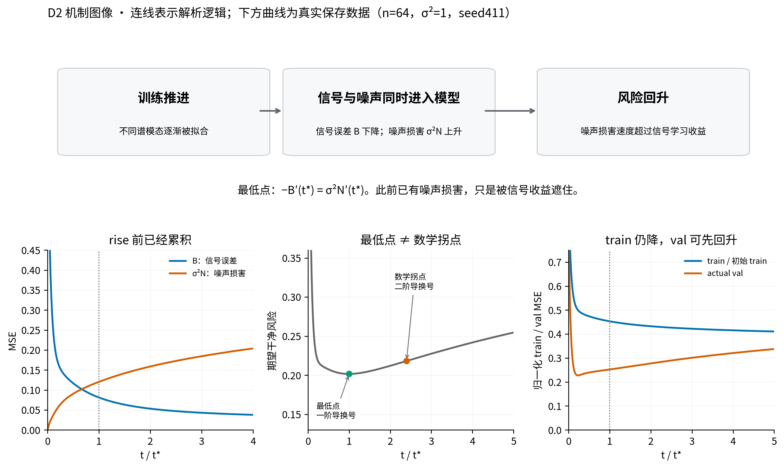
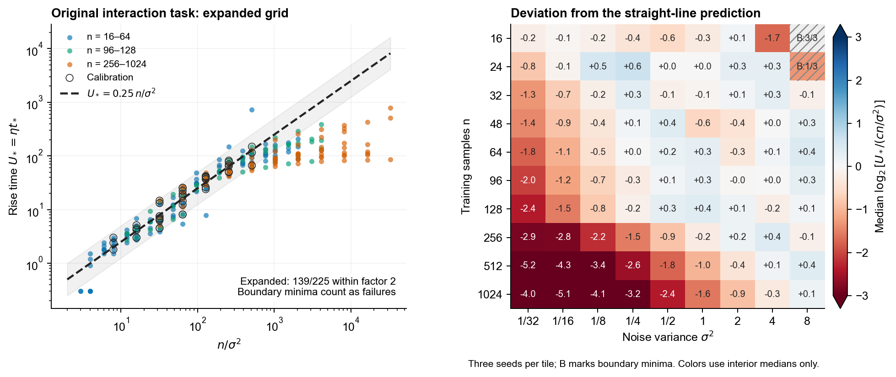
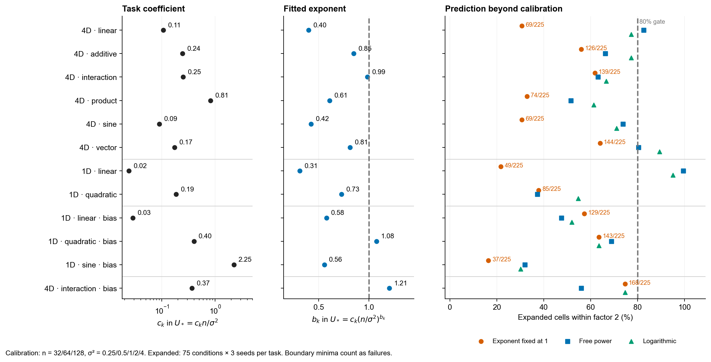
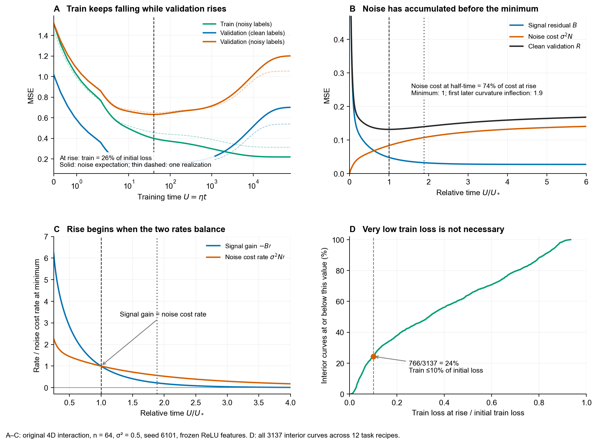
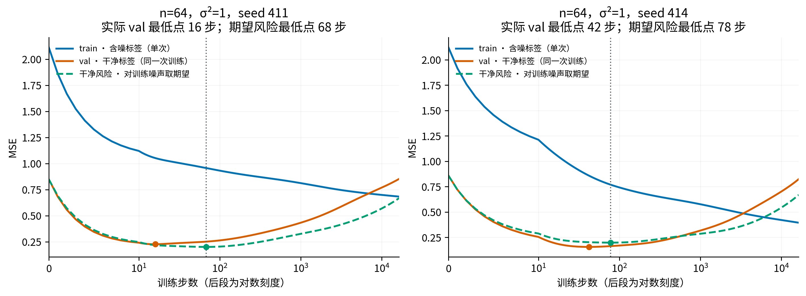
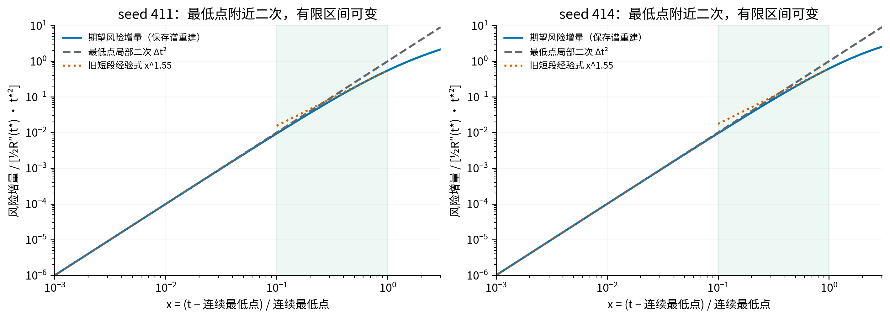
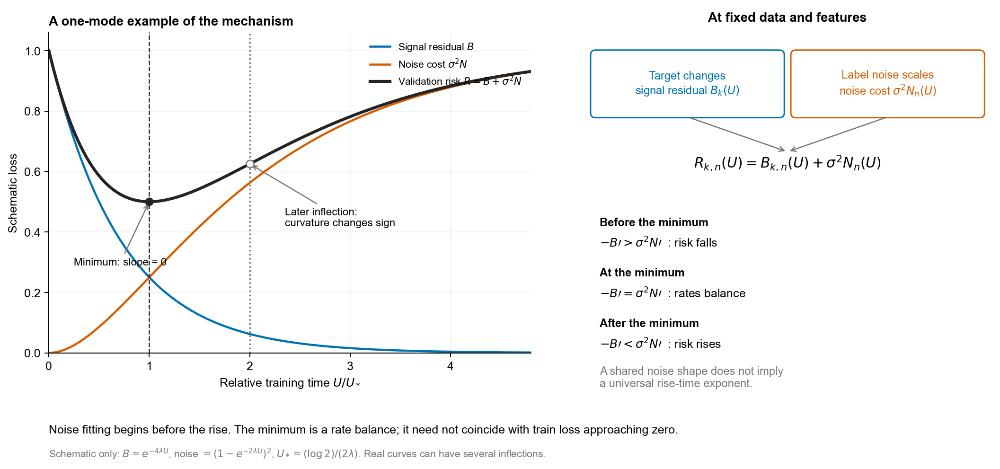

D2：风险何时回升，以及这个规律能否跨任务
结论
旧范围可以简写为 U_rise≈0.28·n/σ²；扩域后不能只为每个任务换一个系数。 原交互任务在 n=32/64/128、σ²=0.25–4 上，固定指数 1 的留出 n 预测为 57/60 在两倍内。新扫描把 n 扩到 16–1024、σ² 扩到 1/32–8；任务各拟合一个系数后，12/12 个任务与特征条件都未达到扩展格点 80% 通过率。U=ηt 是累计训练量，η=0.3，n 是训练样本数，σ² 是训练标签噪声方差。
单变量和多变量都能发生回升，但不能据此认定它们共有指数 1。 同一冻结特征下，4 维线性＋交互任务的校准指数为 0.99，单变量线性任务为 0.31。前者线性模型在校准范围 45/45 通过，扩展范围 139/225；后者仅 49/225 通过，换成自由幂律后为 224/225。这些是固定特征回归证据，尚不覆盖学习特征或分类。
回升前已经在拟合噪声，只是净收益仍为正。 新扫描有 3137 个内部最低点；到半个最低点时间时，噪声风险已达到最低点时该项的 35%–100%，中位 77%。3137/3137 超过注册的 25% 判据。“积累”指噪声带来的 validation 误差，不等于总 validation 误差已经上升。
回升不要求 train loss 先接近零。 最低点处，期望 noisy train MSE 保留初值的 0.5%–93%，中位 33%；仅 766/3137 低于初值的 10%。旧实际训练曲线则保留 11%–88%，中位 42%，0/60 低于 10%。因此当前证据推翻了“至少 90% 回升点必须先低于 10%”这一具体预测。
最低点是斜率转折，数学拐点通常更晚。 新扫描内部最低点 3137/3137 为正曲率；旧 60 条曲线的后续曲率换号在约 1.2–8.1 倍最低点时间。最低点局部是二次形状；旧上升支约 1.55 次方仅描述相对距离 0.1–1 的短段，尾部外推 78/78 失败。

Formulation
冻结特征与平方损失下，对训练标签噪声取条件期望，有精确分解：
\[ R_k(U)=B_k(U)+\sigma^2N(U),\qquad B_k'(U_*)+\sigma^2N'(U_*)=0. \]
R 是独立 clean validation 样本上的期望均方误差。B 是没有训练标签噪声时的 validation 误差。N 是单位训练噪声方差造成的 validation 响应。k 标记任务；同输入与特征下换 scalar 目标只改变 B，N 不变。多输出结果对输出通道平均，单通道噪声独立。撇号表示对累计训练量 U 的变化率。这里的 validation 是新生成的合成审计样本，不是 benchmark test。
最低点前若 −B′>σ²N′，风险下降；最低点两种速度相等；其后噪声成本速度超过信号收益时风险回升。B 在新任务上未必始终下降，这个条件描述不能代替逐曲线检查。
\[ R(U)-R(U_*)\approx\tfrac12 R''(U_*)(U-U_*)^2. \]
此式是光滑非退化最低点的局部解析展开。旧保存谱复算在相对偏移 0.001 时，60/60 曲线的实际增量与二次近似之比为 0.997–1.000。旧有限区间描述可保留为 C·[(U−U_*)/U_*]^1.55，其中 C 取两倍最低点时间处的实测增量；不是整个后期的渐近定律。稳定有限维冻结特征 GD 的风险最终趋向有限极限。
注册定义。 rise 是 0..262144 整数步窗口内第一个全局最低点；落在两端的 103 条曲线不算内部 rise，并在缩放检验中计失败。极低 train 定义为 noisy train MSE/初始 noisy train MSE≤0.1。曲率拐点指线性 U 坐标下二阶导换号，不是 log 时间图里的弯曲位置。两倍内定义为预测/实测在 [0.5,2]。以上阈值是约定。
成立程度
原报告的系数只是有限格点拟合。把指数固定为 1 后重新估系数，得到约 0.28。未舍入模型为 57/60、显示 0.28 模型为 58/60；两者都是原数据拟合。三次留出 n 的系数约 0.28/0.29/0.29，合计 57/60 通过，才是此处的交叉验证数。旧系数约 0.21/0.33/0.20，搭配各自指数；固定指数为 1 时不沿用旧通过率。完整精度只留在存档。
新扫描只在 n=32/64/128、σ²=0.25/0.5/1/2/4 估系数；每任务 45 个 seed 条件。其余格点每任务 225 条作冻结模型的扩展验证；包括边界失败。自由幂律和对数候选也只用相同校准集拟合。
| 任务与特征条件 | 固定指数 1 的 c | 校准通过 | 扩展通过 | 自由指数 b | 自由幂律扩展通过 | 对数候选扩展通过 |
|---|---|---|---|---|---|---|
| 4 维 · 线性 | 0.11 | 28/45 | 69/225 | 0.40 | 186/225 | 174/225 |
| 4 维 · 加性二次 | 0.24 | 41/45 | 126/225 | 0.85 | 149/225 | 174/225 |
| 4 维 · 线性＋交互 | 0.25 | 45/45 | 139/225 | 0.99 | 142/225 | 150/225 |
| 4 维 · 纯交互 | 0.81 | 31/45 | 74/225 | 0.61 | 116/225 | 138/225 |
| 4 维 · 正弦 | 0.089 | 26/45 | 69/225 | 0.42 | 166/225 | 160/225 |
| 4 维 · 双输出 | 0.17 | 43/45 | 144/225 | 0.81 | 181/225 | 201/225 |
| 1 维 · 线性，无偏置 | 0.024 | 26/45 | 49/225 | 0.31 | 224/225 | 214/225 |
| 1 维 · 二次，无偏置 | 0.19 | 22/45 | 85/225 | 0.73 | 84/225 | 123/225 |
| 1 维 · 线性，有偏置 | 0.028 | 30/45 | 129/225 | 0.58 | 107/225 | 117/225 |
| 1 维 · 二次，有偏置 | 0.4 | 33/45 | 143/225 | 1.08 | 155/225 | 143/225 |
| 1 维 · 正弦，有偏置 | 2.2 | 19/45 | 37/225 | 0.56 | 72/225 | 68/225 |
| 4 维 · 线性＋交互，有偏置 | 0.37 | 41/45 | 168/225 | 1.21 | 126/225 | 168/225 |
同一系数跨任务的模型为 970/2700 通过；每任务一个系数提高到 1232/2700；自由指数为 1708/2700；对数候选为 1830/2700。后两者多一个参数，改善说明简单线性不足，不确立普适替代式。


方法与条件
本轮 12 个任务与特征 recipe、90 个 n×σ² 条件、3 个 seed，共 3240 次有限样本谱轨迹评价；其中 3137 个内部最低点、103 个边界最低点。12 个 recipe 包含同任务的特征偏置对照，不是 12 类互不相关的现实任务。数据与特征 draw 为 120 个。计算为 CPU 闭式轨迹扫描，无模型 API、solver 或 GPU；新曲线计算约 54 秒。
输入为 1 或 4 维标准 Gaussian，train 使用 nested 正负配对样本；独立 validation 为 2048 行。ReLU 隐藏特征固定，宽度 128，输出 head 从零开始。目标按分布均方根归一化：线性 x₀；二次 x₀+0.5(x₀²−1)；加性 x₀+0.5(x₁²−1)；交互 x₀+0.5x₀x₁；纯乘积 x₀x₁；正弦；双输出为线性与交互的组合。特征按 train 的均值与整体尺度归一化。隐藏偏置作为单独协议。全批量 GD、η=0.3、无动量或衰减、float64、MSE，每通道按因子 2 更新。
整数 0..256 全记录；之后保存 4096 个对数格点至 262144，并在每个粗网格最小点附近求整数最低点。导数来自稳定离散 GD 因子的连续谱插值。小于最大特征值 1e−12 的特征值按零处理；本轮不宣称找出全部连续时间极值。
train 与 val 的口径要同时画出。 实线显示同一次噪声训练的 noisy train、clean val 和 noisy val；另画对训练噪声平均的 clean risk。独立同方差 noisy-val 的期望只比 clean risk 多 σ²，但单次 realized 曲线可因噪声实现改变形状。原 60 cell 中，单次 clean-val 最低点/期望风险最低点为 0.24–86.72 倍，中位 1.37，不能把期望比例系数直接用于单次早停。



失败与反例
- 统一线性外推失败。 原交互任务在 n128→n256→n512、σ²=1、seed6101 时，最低点 139→173→209 步；样本数每次加倍而时间没有加倍。其线性模型在 n512 和 n1024 的全部噪声格点仅 10/27、8/27 通过。该描述属于扩域后的 development，不是另一次盲预测。
- 单变量模型有容量退化。 无偏置 ReLU 在一维中只提供正半轴、负半轴及常数三个方向，本轮所有 n 的秩均为 3。它仍会回升，但时间主要缓慢增长。加入隐藏偏置后秩与形状改变；偏置协议本身不恢复普适指数 1。
- 原 population 归一化的聚合减半预测仍为 refuted。 跨 n 起点系数极差 0.0158→0.0741、增至 4.68 倍；单 seed 则 3/4 缩小，seed414 增大。不得用有利子集或另一事后散布指标覆盖该注册失败；剩余差异尚未做谱干预归因。
- 旧上升支的尾部外推失败。 1.55 次方描述延伸至窗口末时，78/78 超出两倍误差，不能称完整上升支定律。
- train 极低的必要条件预测失败。 只 766/3137 达到注册 10% 阈值，未达到至少 90%。这些计数并不估计跨现实任务概率。
未决问题
目前更可信的跨任务结构是“信号误差变化与噪声风险变化的速率平衡”，而非统一 n/σ² 时间律。任务改变信号在快慢学习方向上的分布，因而既可改系数，也可改指数和曲线形状；这个解释有冻结特征代数基础，尚无学习特征干预。
下一步应针对任务的谱能量建立可预测的 B 与 N 描述，再检验共同函数 U*=F(σ²/n;任务谱)。若 B≈A·U^−a、nN≈D·U^b，只在这段条件下得到 U*≈[(aA/bD)·n/σ²]^(1/(a+b))；共有指数 1 要求 a+b≈1。这是待检验机制候选，不是本轮发现。分类、交叉熵、小批量、Adam、学习特征及 train-only 早停均未验证。

证据
- 本轮预注册（存档）与源码：aiq_kb/research/d2_scaling_20261009/run.py；冻结 commit 07d79b7 早于本轮计算。
- 新扫描：summary.json（存档）、results/、execution.json；补充描述（存档）。
- 直接数值核验（存档）。3360 个结果/data hash通过；8 个指定cell、0/1/16/64/256 步的独立GD/噪声响应最大差 1.4e−13；缩放分母含全部103边界。
- 原曲线重建：summary.json（存档）、analysis.py。原60 cell最小点差0；train重建差≤5.2e−13，val尾部直接预测差≤3.5e−12。
- 历史 r113 的 summary 与原报告保持原路径只读。旧失败预测保留；本轮没有修轮账、改变旧supervisor预算或启动其研究会话。